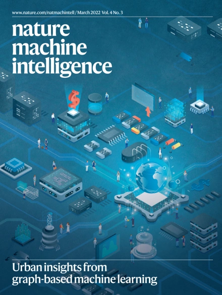

Ma Laboratory
I am an associate professor of Department of Electrical Engineering
and Institute for AI Industry Research at Tsinghua University. Before joining Tsinghua University, I was a tenure track Walther Assistant Professor of Email: majianzhu <at> tsinghua <dot> edu <dot> cn |
Notice: For students in Tsinghua University, please contact me if you are interested in workinig with me.
I am looking for talanted Master students, Ph.D. students to work with in the following directions,
Graphical Neural Network, Deep Learning
Immunology, Drug Discovery
Bioinformatics and Computational Biology
For undergraduate and master studuents, please don't do the following: First contact me to do research and then tell me you need to focus on your homework and final.
Research
Our main focus is to develop novel computational models for translation of patient data to precision diagnosis and treatment for complex diseases, such as cancer. We seek to advance this goal from three aspects: 1) Interpretable & Transferable Machine Learning Models 2) Systems Biology and Network Models 3) BioNLP & Text Mining. Please see figure below for how we can connect these dots.
 |
Research Highlights
NEW! Our new paper is selected as the cover art of Nature Machine Intelligence
|  |
Our new paper is accepted by the journal sensor, now you can do smartphone authentication by signing in the air:
Our Cancer Cell paper is discussed in the following media:
ScienceDaily: DrugCell: New experimental AI platform matches tumor to best drug combo
Health IT Analytics: Deep Learning Model Could Enhance Cancer Precision Medicine
Med India: New AI Platform Matches Tumor to Right Drug Combination
AZO Life Sciences: Experimental AI platform predicts best approach to cancer treatment
UC San Diego Health Newsroom: DrugCell: New Experimental AI Platform Matches Tumor to Best Drug Combo
Our Nature Methods paper is discussed in the TECHNOLOGY FEATURE of Nature: Deep learning takes on tumours
Invited talk at the Bristol-Myers Squibb Informatics and Predictive Sciences, 2020
Our new dog paper is reported by the following media:
ABC New way to calculate dogs’ ages may unlock secret to aging
NBC Forget ‘Dog Years’: Scientists Say We've Been Calculating Our Pups’ Ages Wrong
Scientific American Podcast: How old is your dog in human years? Genetic study offers a new way to answer that question.
BBC future How to calculate your dog's real age
Nature Briefing Daily briefing: A better formula for ‘dog years’.
Science News Here’s a better way to convert dog years to human years, scientists say.
Wall Street Journal Our Problem With Percentages.
Washington Post Scientists have come up with a better way to convert your dog’s age to human years.
New Scientist Convert your dog’s age into human years using this new formula.
Discover Science May Have a Better Way to Translate Dog Years to Human Years.
New York Magazine, The Cut There’s a New Way to Calculate Your Dog’s Age in Human Years.
New York Post Why a dog’s age in ‘human years’ might not be as old as you think.
People Magazine There’s a Better Way Calculate Your Dog’s True Age in Dog Years, Researchers Say.
The Sun, also Fox news Your dog’s REAL age in ‘dog years’ revealed (and it’s not their age multiplied by seven).
The Scientist Magazine Ribosomal DNA Can Predict an Animal’s Age.
Science Alert What’s The Real Human Equivalent of Your Dog’s Age? Here’s a New Formula.
Smart News Calculate Your Dog’s Age With This New, Improved Formula.
Gigazine A new formula for converting the age of dogs to humans has appeared, how old are 1-year-old dogs?
Considerable There’s a new way to calculate your dog’s age in human years.
Techballad New “dog to human years” calculation more accurately determines when your beloved pet will die.
Green Report Una nuova formula matematica per calcolare l’età “umana” dei cani.
eestinen Kui vana on koer tegelikult inimese aastates – ja see ei ole nii lihtne nagu 7-ga korrutamine!
gurumed La véritable formule pour calculer l’équivalent en âge humain de votre chien.
skuola Quanti anni ha il tuo cane? La nuova formula per capirlo.
wonderfulnews 犬の年齢で衝撃データ!? 人間に換算する新しい公式が登場「16×loge(犬の年齢)＋31＝人間に換算した年齢」
Invited talk at the Next Generation in Biomedicine by The Broad Institute of Harvard and MIT, 2019
Invited talk at the Big Mechanism at DARPA, 2018
Invited talk at the 13th Annual Meeting of the International Conference on Genomics (ICG), 2018
Invited talk at Department of cancer informatics, Sun Yat-Sen University, 2018
Oral presentation at Pacific Symposium on Biocomputing (PSB), 2018
Oral presentation at Research in Computational Molecular Biology (RECOMB), 2015
Oral presentation at ISMB 3DSIG and sequencing workshop, 2015
Invited talk at MCBIOS, 2014
Invited talk at the Bioinformatics Institute of Peking University, 2014
Oral presentation at Research in Computational Molecular Biology (RECOMB), 2014
Oral presentation at Artificial Intelligence and Statistics (AI & statistics), 2013
Invited talk at 2nd Zing Conference on Protein and RNA, 2013
Oral presentation at Intelligent Systems for Molecular Biology (ISMB), 2012
Our server RaptorX attends a Protein Strcuture Prediction Marathon: CAMEO
 |